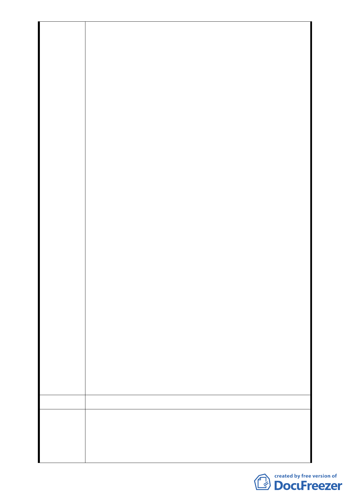

及，造成社會動盪，產生嚴重的社會問題及族群問題。故
盼台北都會區的都市更新勿重蹈美國的惡例，使都市更新
發展成驅趕原住戶，不尊重住戶的財產權及生存權的元
兇。
4、本開發案係29層樓高，並不符本社區發展，及住戶之需求。
本建案並未經住戶充份討論，更無表決同意機制，且住戶
在建案未擬定前已簽事業計畫同意書。本社區除臨仁愛路
二段為12層樓建築，其餘皆為4層及6層樓集合住宅。且仁
愛路一段及二段，臨博愛特區皆無20層樓以上建築。此29
層樓龐然大物使景觀顯得不協調，又使得本社區開發負荷
過重，加上近約400個停車位 (尚未確定)，交通及環境品
質惡化。本社區尚有屋齡不到10年之建築亦遭拆除之命
運，不到10年之建築，為何要配合政府政策拆除重建 ? 另
本都市更新是否符合都市更新各項指標 ? 市府相關單位
並未說明。
5、本開發計畫並不是選最佳建築獎，應注重本社區居民意
見，建構適合本社區以住宅為主的建案。金山南路口及和
平東路口，元利建設規劃38層樓建築遭當地住戶反對，可
見建商規劃建案不聽取住戶之意見，設計出不符住戶所需
及與環境不協調之建案。而因已出具事業計畫同意書，已
過門檻，更無討論空間。都市更新或都市計畫應兼顧該社
區生活型態及發展，更不只是建商實施者自己的想法，也
不是完全照著學者專家建構的家園。
6、台北市政府相關單位稱合康公司非為實施者，且都市更新
案於“預審" 階段(l0月2日幹事會預審)。然該公司之角
色為何?本社區都市更新持續進行，已進行至權利變換及
選屋階段，及討論合建契約及信託契約階段。且合康公司
於11月16日進行測量(並無市府公文)，12月4日本社區將
進行權利變換及選屋說明 (詳附件)，市政府之認知與本
社區實質上差距太大，是否合法請市府相關單位說明。
建 議 辦 法 （同上）
依市府都市發展局代表說明：「台北好好看申請案並未突破都
專 案 小 組 市更新法令之限制，都市更新條例中所規範實施者應具備之
審 查 意 見 條件與同意比例，也不會因申請台北好好看而賦予某一公司
特別之權利」，本案陳情民眾所關切之更新同意書效力、權利
變換程序及未來實施者之適任與否等議題，因非涉都市計畫
- 35 -